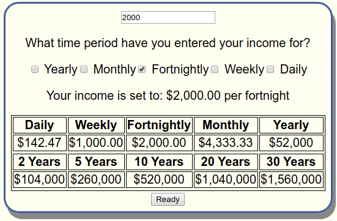

Simple Budget Calculator

The aim of this website it is to allow you to work out a basic budget as easily as possible. The budget is based on the idea of splitting income into different categories, and assigning each of those categories a percentage (weight) of total income. The idea is to get some rough estimates in, and then to monitor and revise this over time as necessary. After splitting your income into 3-6 categories, ideally you would then create bank accounts for each of these categories, and automatically transfer your chosen percentages of income each pay cycle. If you initially don't get your percentages quite right, that's fine! This is likely to be an iterative process, and at the very least should help you to keep track of where your income is going.
In step 1, enter your after tax income into the form, and make sure you've entered it for the correct time period. In this example I've entered a salary of $2,000/fortnight.
Your income is broken down for you so you can see the how much you earn over different periods of time.
Now it's time to decide how you want to divide your income. Some possible categories are provided, but you can add your own depending on your needs. Note that the 'Basics' category is already selected. This category is for your everyday expenses; food, rent, etc, so it's a safe bet that some of your income should be designated to this category. But feel free to change it if you want.
In this example I have decided that I will split my income between 'Basics', 'Splurge', 'Short-term Savings', and 'Retirement'.
You now need to decide what percentage of your income you want to assign to each of your chosen categories. To help with this process, some lists are provided that you can choose to fill out with some estimates of how much you think you will need to designated to a particular category over the course of a week. In this example I chose to fill out the lists for my two 'Spending' categories.
Using these estimates, you can now assign weights to each of your chosen categories.
And that's it! Some information is provided for you, to help see how much you are likely to spend/save over various time periods, based on the budget you designed. If you want you can use this information to go back to previous steps and refine or fine-tune your budget.
As mentioned at the beginning, one approach that might help you keep to your budget could be to set up bank accounts corresponding to each of your chosen categories. So in this example I would have four accounts; two spending and two saving. Maybe I decide to invest some/all of the retirement savings. Finally, assuming you have a regular pay cycle you can setup automatic transfers to each of your accounts each cycle. This helps you to keep to your budget, and helps to ensure that you notice if things don't go to plan :)